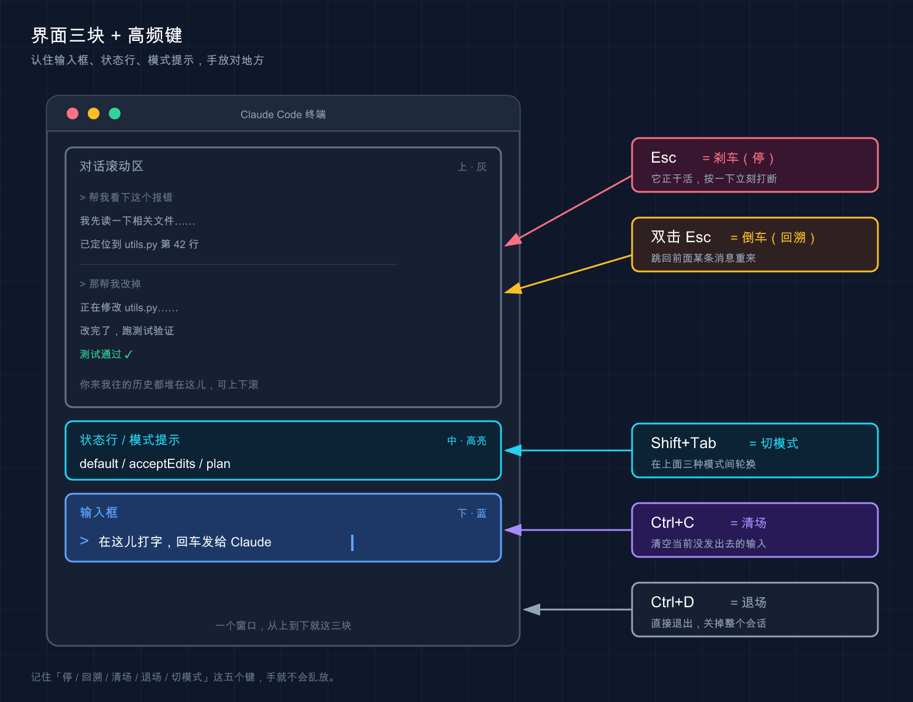

📚 系列导航：上一篇 13 项目结构 带你看清 Claude Code 在你项目里都摆了哪些文件。这一篇换个视角——回到那个终端窗口本身，搞懂界面每一块是干嘛的，再把几个能让你「快一倍」的键盘动作焊进肌肉记忆。
「欸，你这 Esc 按一下和按两下不一样？」
「对，差远了。按一下是踩刹车——让 Claude 停下来；按两下是倒车——把整段对话退回到上一个点。」
「……我之前一直当成一个键在用。」
说句实话，这是新手最容易搞混的一句话。Claude Code 的界面看着简单，就一个输入框加几行字，但底下藏着一整套键盘动作和特殊符号，知道的人用得飞起，不知道的人全靠鼠标和回车硬刚。我头两周也这样——有一回它顺着我一句模糊的话开始疯狂改一堆文件，我盯着满屏滚动的输出干等了快三分钟，眼看越改越偏，才猛地想起来「我按个 Esc 不就停了吗」，那一刻是真有点想抽自己。
这一篇不教你提需求（那是下一篇的事），只干一件事：让你把手放对地方。
看完这一篇，你会拿到：
- 一张「界面分区图」——输入框、状态行、模式提示分别在哪、看什么
- 一张能贴在显示器边上的高频快捷键速查表（Esc、Ctrl+C、Ctrl+D、Shift+Tab、上箭头……）
- 输入框里
@!两个特殊前缀怎么用，外加/和#是干嘛的一句话交代 - 多行输入到底怎么打（这个坑太多人踩过）
01 先看懂这块屏：界面分成哪几部分
先给结论：Claude Code 的界面，你只需要认住三块——输入框、状态行、模式 / 权限提示。其他的滚动区域都是它在跟你「说话」，不用专门学。
类比：看汽车仪表盘。 你开车不用认全所有指示灯，但方向盘、挡位、油表这几样必须一眼能找到。界面也一样，认住主操作区和几个关键读数就能开走。
claude 启动后，从下往上大致是这么个布局：

- 输入框：最底下那一行，前面通常有个
>提示符。这是你跟 Claude 说话的唯一入口，打字、贴代码、敲特殊命令全在这儿。 - 状态行 / 页脚：紧贴输入框上下的那几行小字。它会显示一些上下文信息——比如当前在哪个目录、有没有后台任务在跑、如果你这个分支有打开的 PR，官方文档说还会在页脚显示一个可点击的「PR #编号」链接，下划线颜色代表审查状态（绿=已批准、黄=待审、红=请求改动、灰=草稿）。
- 模式 / 权限提示：告诉你现在是「普通模式」还是「计划模式（plan）」还是「自动接受编辑（acceptEdits）」。这块最该盯——它决定了 Claude 接下来动手前问不问你。
这里有个新手特别容易慌的场景：屏幕突然变花、或者一半空白了。别以为崩了。官方给了个专门的键 Ctrl+L，强制重绘屏幕，输入和对话历史都保留。我自己最常撞上的就是在 tmux 里跑 Claude，切到别的窗口办点事、再切回来满屏乱码，第一次遇到我还真以为会话挂了、手都伸到重启上了，后来才知道一个 Ctrl+L 就干净了——现在屏幕一花我条件反射就按它。
💡 一句话总结：界面认住「输入框 + 状态行 + 模式提示」三块就够开工，屏幕花了别慌，
Ctrl+L重绘。
02 高频快捷键：像换挡和喇叭，熟了不用低头看
这是本篇的核心。
类比：车上的换挡杆和喇叭。 新手开车眼睛老往挡位上瞟，老司机手一搭就知道在几挡，喇叭抬手就按——因为这些动作进了肌肉记忆，不占注意力。快捷键就是这么个东西：头三天你得照着表按，按熟了，全程手不离键盘，眼睛只盯输出。
下面这张表，全部按官方 interactive-mode.md / keybindings.md 核对过，挑的都是新手每天都会用到的。建议你截图贴在显示器边上，用一周就记住了：
| 快捷键 | 作用 | 什么时候按 |
|---|---|---|
Esc |
中断 Claude 当前的回答或工具调用 | 它跑偏了 / 你想改主意，刹车用 |
Esc Esc（输入框为空时） |
打开回退菜单，跳回上一个点 | 想撤销刚才那轮、倒车回存档 |
Ctrl+C |
中断；没东西可中断时，第一次清空输入、第二次退出 | 想清掉已经打了一半的输入 |
Ctrl+D |
退出 Claude Code 会话 | 干完活，关门走人 |
Shift+Tab |
循环切换权限模式（default / acceptEdits / plan…） | 想让它「先规划别动手」或「放开手脚自己改」 |
↑ / ↓（上 / 下箭头） |
翻命令历史（光标在边缘时） | 重发上一条指令，不用重打 |
Ctrl+L |
重绘屏幕（保留输入和历史） | 屏幕花了 / 半空白 |
Ctrl+R |
反向搜索命令历史 | 想找「我上次那条长指令」 |
Ctrl+O |
切换详细转录视图 | 想看它具体调了哪些工具 |
挑三个最容易被搞混的，单独说清楚：
Esc 一下 vs 两下：踩刹车还是倒车
官方文档把这俩写得明明白白，翻译成人话就是：
Esc按一下 = 踩刹车。Claude 正在回答或正在调工具，你一按它就停在当下，已经做完的部分会保留，你可以接着补一句重新指挥它。Esc按两下 = 倒车。但有个前提——输入框必须是空的。空的时候连按两下 Esc，会弹出回退菜单（就是第 07 篇讲过的检查点 / 回溯），让你跳回之前的状态。
⚠️ 这是最坑的一点（官方明确写了）：如果输入框里有文字，连按两下 Esc 是「清空这段文字并存进历史草稿」，不是打开回退菜单。所以要回退，先把输入框清空。
新手很容易在这上面栽——输入框里打了半句话，想回退，狂按 Esc，结果文字没了、菜单也没出来，一脸懵。搞懂了就好办：先清空，再双击 Esc。
Ctrl+C vs Ctrl+D：清场还是退场
这俩都带点「停」的意思，但完全两码事：
Ctrl+C= 清场不离场。有任务在跑就中断任务；没任务时第一次按清掉你输入框里的字，连按第二次才退出。Ctrl+D= 直接退场。一下就退出整个会话（它发的是 EOF 信号）。
顺带说个冷知识：这两个键是官方文档里明确标注的「保留快捷键」，硬编码、不能重新绑定（同一批的还有 Ctrl+M，因为它在终端里等于回车）。所以哪个终端、哪个系统，Ctrl+C / Ctrl+D 的行为都一致，放心用。
Shift+Tab：一键切换「问不问你」
Shift+Tab 大概是日常用得最多的快捷键，没有之一。它在几个权限模式之间循环：
- default（默认）：动手改文件前会停下问你。
- acceptEdits（自动接受编辑）：编辑类操作不再逐个问，提速用。
- plan（计划模式）：只出方案不动手，适合大改动前先对齐思路。
- 以及你额外开启的其他模式（如
auto/bypassPermissions）。
权限模式（Permission Mode），说白了就是「实习生动手前问不问你」的那个开关。
按一下 Shift+Tab 就在它们之间转圈，状态行会实时显示你当前在哪个模式。这套模式具体每个是干嘛、怎么配，第 20 篇「权限配置」专门讲，这里你只要记住：想换模式，Shift+Tab 转就完事了。
（一个平台差异：官方注明在某些 Windows 配置下（不支持 VT 模式的旧版终端、较老的 Node / Bun 运行时），这个键默认是 Alt+M 而不是 Shift+Tab，遇到不灵的换它试试。）
💡 一句话总结：
Esc一下刹车两下倒车、Ctrl+C清场Ctrl+D退场、Shift+Tab切「问不问你」——这四个焊进肌肉记忆，你就出师一半了。
03 输入框里的特殊前缀：@ 和 ! 是两把快刀
光会按键还不够。Claude Code 的输入框其实是「智能」的——某些符号打在开头，会触发完全不同的行为。官方在「快速命令」里列得很清楚，对新手最有用的是这两个：@ 和 !。
类比：手机输入法里打 @ 自动跳出联系人。 你不用记全名，敲个 @ 它就把候选人列出来给你选。@ 在 Claude Code 里也是这个味道，只不过选的是文件。
@：精准点名一个文件 / 目录
直接在输入框里打 @，会触发文件路径自动补全——它会列出当前项目里的文件让你选，你接着打几个字母过滤，选中即可。
为什么要用它？因为这是把一个具体文件「钉」进你这句话里最准的方式。比如你想让它看某个文件：
@src/auth.ts 这里的登录逻辑有没有问题？
这么打，Claude 明确知道你指的是哪个文件，不用它自己去猜、去全项目里翻。写复杂指令时基本离不开 @——项目一大，文件重名的多，用大白话说「那个 auth 文件」它经常找错，@ 一点名就没歧义了。
!：不用等批准，直接跑个 shell 命令
在输入框开头打 !，后面跟一条命令，就进入 Shell 模式（Bash 模式）：这条命令直接在你的终端跑，不用 Claude 批准、也不用它先「理解」你的话再替你跑，跑完的输出会被加进对话上下文里。
! git status
! ls -la
这玩意儿什么时候香？当你想顺手看一眼仓库状态，不想打一句大白话让它猜你要跑什么、再等一轮批准。比如改到一半，想确认下当前 git 状态，直接 ! git status，结果立刻出来，Claude 也「看到」了这个输出，下一句就能接着这个状态聊。
跑完之后 Claude 回不回话？分两种情况，成本账也不一样：
- 默认（v2.1.186 起）：自动回你一句。 比如
! npm test跑完，它会直接跟一句解释哪儿失败了，不用你再问。省事，但这次回复按一条普通提示词计费——所以默认情况下!省的是「描述需求 + 等批准」那一来一回，不是 token。 - 在
settings.json里设respondToBashCommands: false：只记录、不回话。 回到 v2.1.186 之前的老行为——输出只进上下文，当下不发起任何模型调用，「省 token」这个卖点就回来了。严格说也不是零成本：这段输出会随你下一条消息按输入 token 计费，通常小到可以忽略；但要是!跑了个刷屏的长日志，这个尾巴就不小了。
怎么选：想让它顺手点评一下输出（比如跑完测试直接听它解释哪儿挂了），用默认；只想把现场数据「喂」进对话、自己掌握节奏，设 false。
几个官方提到的实用细节：
- 想退出 Shell 模式：按
Esc、Backspace，或在空提示上按Ctrl+U。 - 它支持基于历史的补全：打一半命令按
Tab，能从你这个项目里之前跑过的!命令补全。
那 / 和 # 呢？
你可能在别处见过这俩，这里一句话交代清楚，别混淆：
/（斜杠开头） = 调用命令 / Skill。打一个/会弹出一长串可用命令（/help、/clear等）。这套斜杠命令体系内容很多，我们留到第 36 篇「斜杠 / 命令」专门展开，本篇你只要知道「/是命令入口」就够了。#（井号开头） = 历史上有过「用#开头快速往记忆（CLAUDE.md）里记一条」的用法，但不同版本行为有差异。Claude Code 怎么「记住」你的偏好、CLAUDE.md 怎么写，是第 18 篇「CLAUDE.md 使用指南」和第 25 篇「记忆系统」 的正题，到那儿再系统讲。这里不展开，免得你按了发现版本对不上。
把四个前缀放一起对照，你就不会记串了：
| 开头符号 | 触发什么 | 一句话 | 本篇要不要细讲 |
|---|---|---|---|
@ |
文件路径自动补全 | 精准点名一个文件 | ✅ 上面讲了 |
! |
Shell 模式 | 直接跑 bash，输出进上下文，Claude 默认会接话 | ✅ 上面讲了 |
/ |
命令 / Skill 菜单 | 控制会话的命令入口 | ❌ 留给第 36 篇 |
# |
（与记忆相关，版本相关） | 往 CLAUDE.md 记东西 | ❌ 留给第 18 / 25 篇 |
💡 一句话总结：
@点名文件、!顺手跑命令，这俩是天天用的快刀；/和#各有专篇，本篇只认识它们存在就行。
04 多行输入：回车老是把话发出去，怎么办
这是个高频「卡点」，单独拎出来讲。
问题来了：你想给 Claude 一段比较长的、分好几行的指令，结果按回车想换行，话却直接发出去了——半句话就被提交了。新手十个里有八个第一周都中过这招。
原因很简单：输入框里 Enter 默认就是「发送」，不是「换行」。要换行，得用别的键。官方给了好几种打法，按「最不挑终端」到「最方便」排：
| 打法 | 怎么按 | 适用范围 |
|---|---|---|
| 反斜杠转义 | 先打 \，再按 Enter |
所有终端都行，记不住别的就记这个 |
| 控制序列 | Ctrl+J |
任何终端都行，无需配置 |
| Shift+Enter | Shift+Enter |
iTerm2、WezTerm、Ghostty、Kitty、Warp、Apple Terminal、Windows Terminal开箱即用 |
| Option+Enter（macOS） | Option+Enter |
macOS 上需先把 Option 配成 Meta 键 |
一个稳妥的习惯：**记死一个 \ + Enter 就够了**——因为它「在所有终端都工作」，换机器、换终端都不用重新适应。等你固定用某个终端了，再去试 Shift+Enter 那种更顺手的。
如果你用的是 VS Code、Cursor、Alacritty、Zed、Devin Desktop 这类（它们的内置终端默认不支持 Shift+Enter 换行），官方给了个一劳永逸的办法：运行 /terminal-setup 自动装上换行绑定。
还有个更舒服的玩法：嫌在小输入框里写长指令憋屈，可以按 Ctrl+G，直接在你的默认文本编辑器里写，写完保存就带回来了。写那种几十行、带格式的复杂需求时基本都这么干，比在终端里硬敲舒服太多。
💡 一句话总结：回车默认是「发送」不是「换行」；**换行记死
\+Enter万能**，长指令直接Ctrl+G开编辑器写。
05 动手：三分钟把这几个键全试一遍
光看不练，明天就忘。下面给一套最小验证流程，不依赖任何复杂项目，随便找个文件夹就能跑。打开终端跟着走。
第一步：进任意一个有文件的文件夹，启动
cd ~/Desktop
claude
预期：出现欢迎界面，最底下是输入框（前面一个 >）。
第二步：试 ! Shell 模式
在输入框里打（注意 ! 顶格开头）：
! echo hello-shortcuts
回车。预期：终端直接打印出 hello-shortcuts（没有经过「征求批准」那一步），命令和输出被记进对话，然后 Claude 会针对这个输出简单回一句（默认设置下）——这就是 Shell 模式的完整流程。
第三步：试 ↑ 翻历史
输入框空着的时候，按一下上箭头 ↑。
预期：刚才那条 ! echo hello-shortcuts 被原样调回输入框里。这就是命令历史，重发指令不用重打。先按 Esc 或 Ctrl+U 清掉它。
第四步：试 Shift+Tab 切模式
按一下 Shift+Tab，再按一下，再按一下。
预期：状态行里的模式提示在 default / acceptEdits / plan 之间循环变化（你启用了哪些模式就在哪些之间转）。看到那行字在变，就说明你切对了。多按几下转回 default。
第五步：试多行输入
打一个字母，然后按 \ 再按 Enter，再打第二行：
第一行 \
第二行
预期：\ + Enter 让光标换到了下一行而不是把「第一行」发出去。这就对了。
第六步：退出
按 Ctrl+D。
预期：直接退出 Claude Code，回到普通终端。
跑完这六步，本篇讲的 !、历史、Shift+Tab、多行、退出，你就全亲手验证过一遍了。
⚠️ 一个可能的小插曲：如果你在 macOS 上发现 Option+Enter 之类的 Option 键快捷键不灵，那是终端没把 Option 配成 Meta 键。这是终端设置问题、不是 Claude 的 bug——\ + Enter 永远能用，先拿它顶着。
💡 一句话总结：照着这六步亲手跑一遍，
!、↑历史、Shift+Tab、\+Enter换行、Ctrl+D退出就全过了一遍肌肉记忆，比看十遍表都记得牢。
06 进阶一句：所有键都能改
最后留个钩子。上面这些键全是默认值，但 Claude Code 支持自定义快捷键——觉得哪个键不顺手，可以改。
按官方文档（需要 v2.1.18 或更高版本，用 claude --version 查），运行：
/keybindings
会创建 / 打开 ~/.claude/keybindings.json，你在里面就能重新绑定。不过有几个键改不了——前面说的 Ctrl+C、Ctrl+D 是硬编码的保留键。
给新手的建议是：先别急着改。 默认配置是官方反复打磨过的，先用熟，等你明确感觉到「这个键我每天按、但位置别扭」了，再去动它。一般用上快一个月、才会真正想改某个键，在那之前默认的全够用。
💡 一句话总结：键不顺手能用
/keybindings改，但新手先把默认的用熟，别一上来就折腾配置。
07 小结
这一篇没教你怎么提需求，专门教你把手放对地方——界面看哪、键怎么按、特殊符号怎么用。
把核心动作收成一张表，揣兜里：
| 你想干嘛 | 按这个 |
|---|---|
| 让它停下来（保留已做的） | Esc |
| 退回上一个点（输入框先清空） | Esc Esc |
| 清掉输入 / 退出 | Ctrl+C / Ctrl+D |
| 切「问不问你」的模式 | Shift+Tab |
| 翻 / 搜命令历史 | ↑ / Ctrl+R |
| 屏幕花了重绘 | Ctrl+L |
| 点名一个文件 | @ |
| 顺手跑条命令 | ! |
| 多行输入换行 | \ + Enter |
你现在应该能： 一眼认出界面的输入框、状态行和模式提示；用 Esc 精准刹车、Shift+Tab 切权限模式；用 @ 点名文件、! 跑命令；不再被「回车把半句话发出去」坑到。这些动作熟了之后，你跟 Claude Code 的交互会从「鼠标键盘来回切」变成「手不离键盘」——效率的差距，就在这儿拉开。
下一篇 15「怎么提问和给指令」——手放对地方了，接下来就是「嘴」的功夫了。同样一个需求，会问的人三句话搞定，不会问的人来回扯五轮还跑偏。下一篇咱们就聊：到底怎么跟 Claude 说话，它才听得准、干得对？